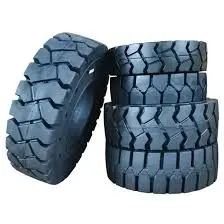
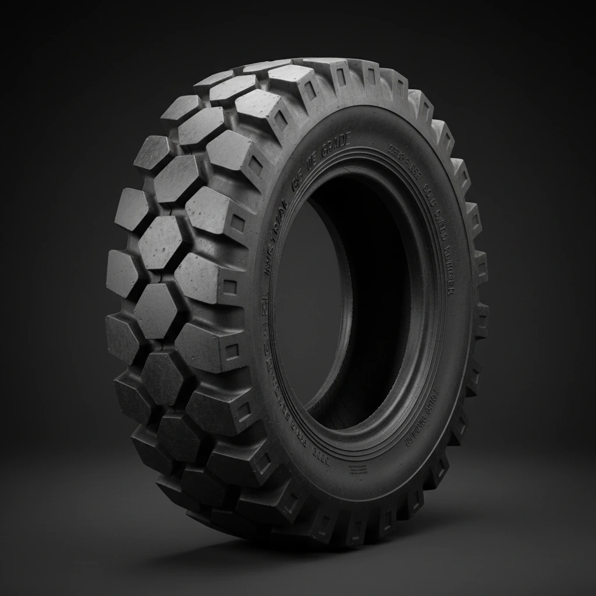
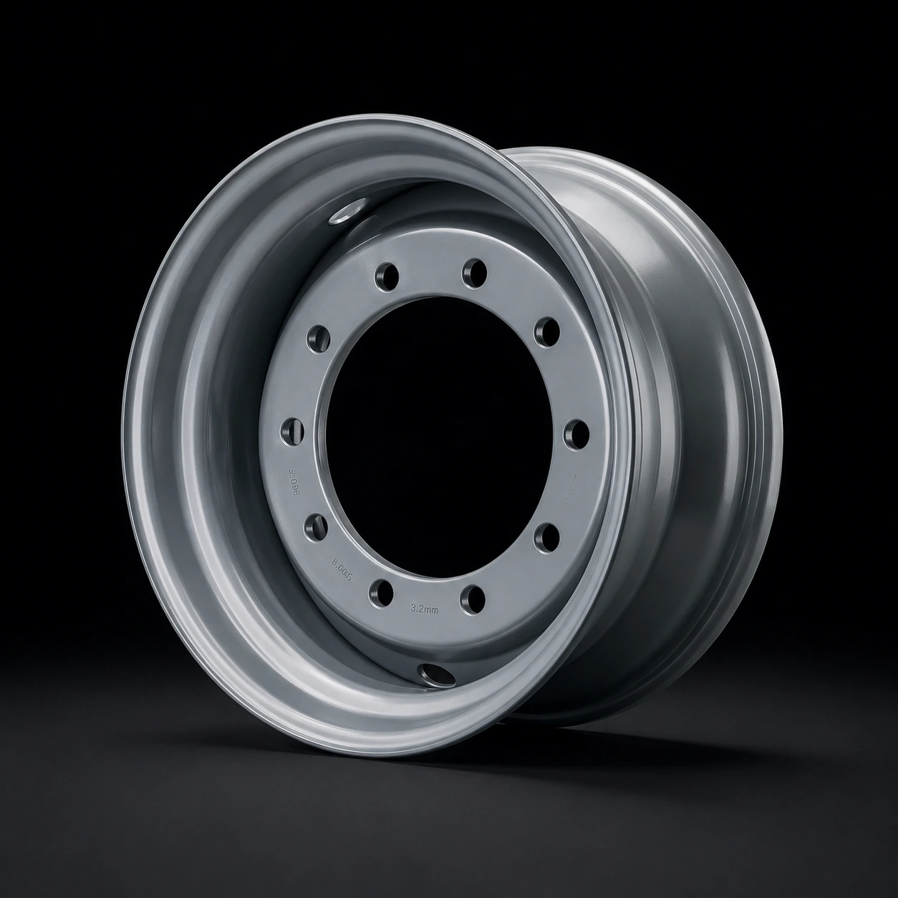
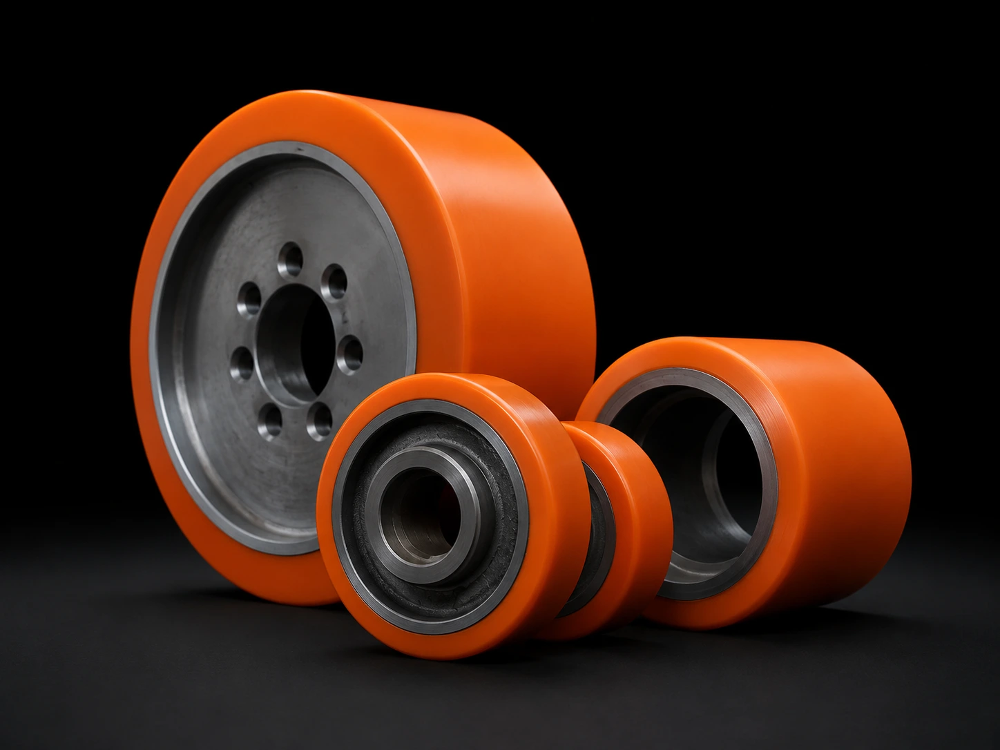
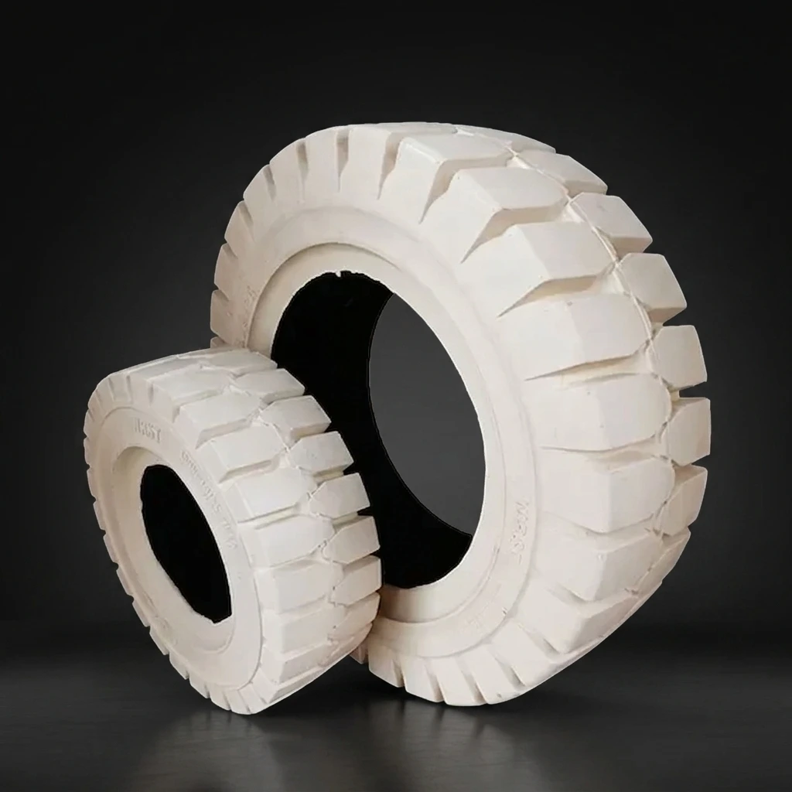
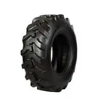
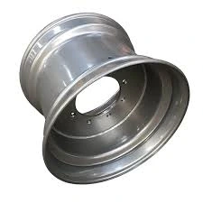
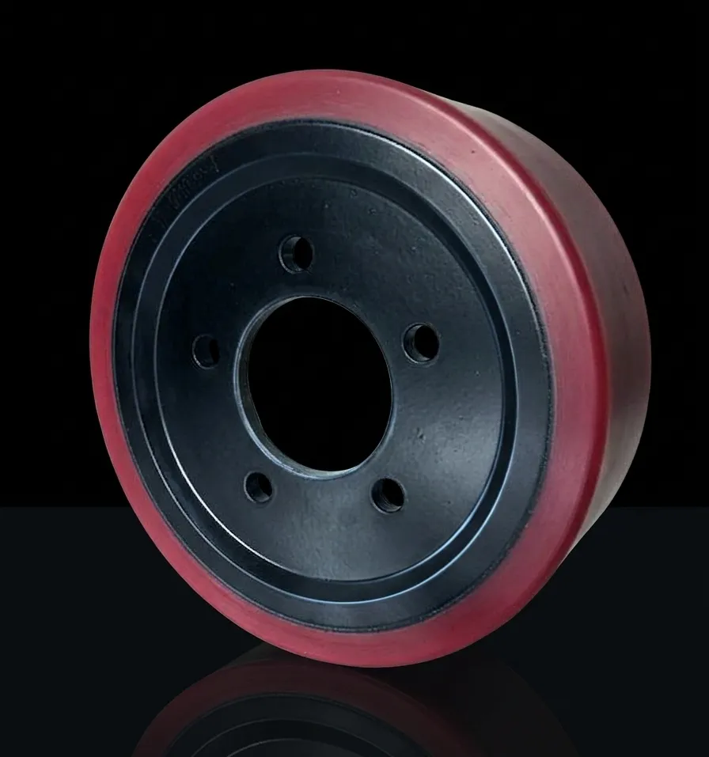
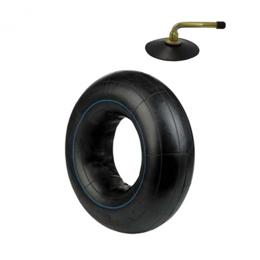
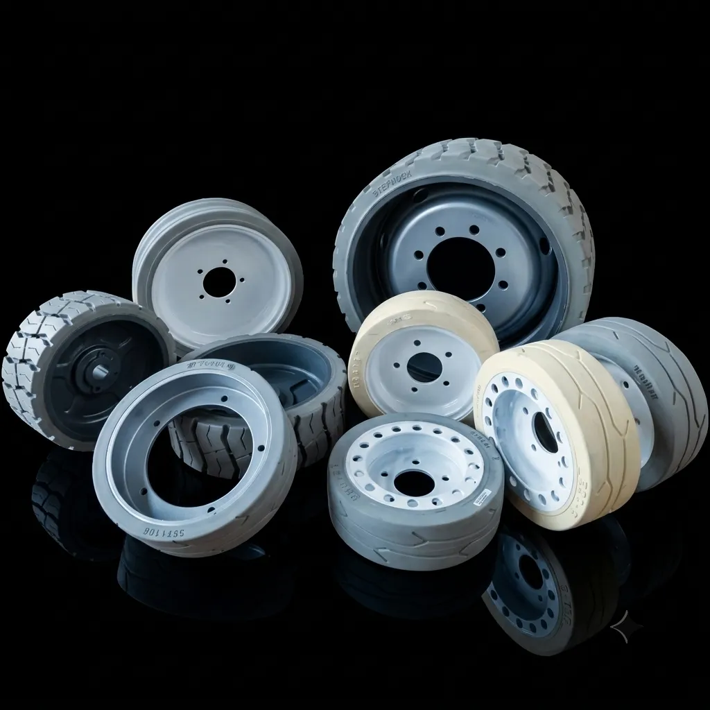

Todas las medidas de ruedas macizas para grúas de alta capacidad.

Todas las medidas de diseños inflados de alta tracción para terrenos hostiles.

Todas las medidas de llantas industriales para venta o fabricación.

Todas las medidas y marcas de ruedas de poliuretano para carretillas elevadoras.

Todas las medidas de ruedas macizas blancas para grúas de interior.

Todas las medidas de diseños inflados de alta tracción para terrenos hostiles.

Todas las medidas de llantas industriales para venta o fabricación.

Todas las medidas y marcas de ruedas de poliuretano para carretillas elevadoras.

Todas las medidas y marcas de cámaras para neumáticos de grúas.

Todas las medidas y marcas de ruedas de plataforma.